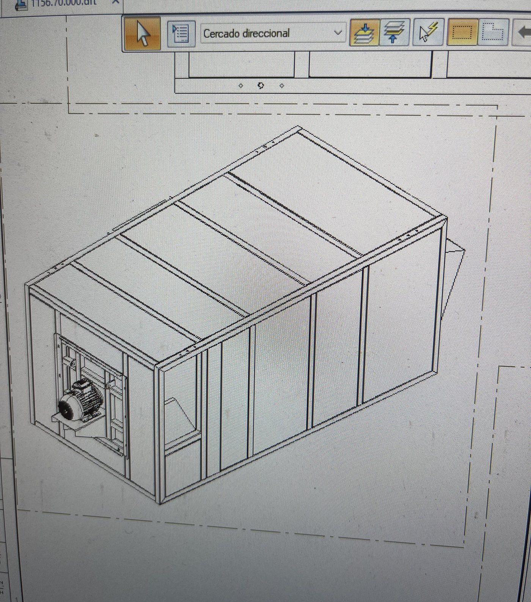
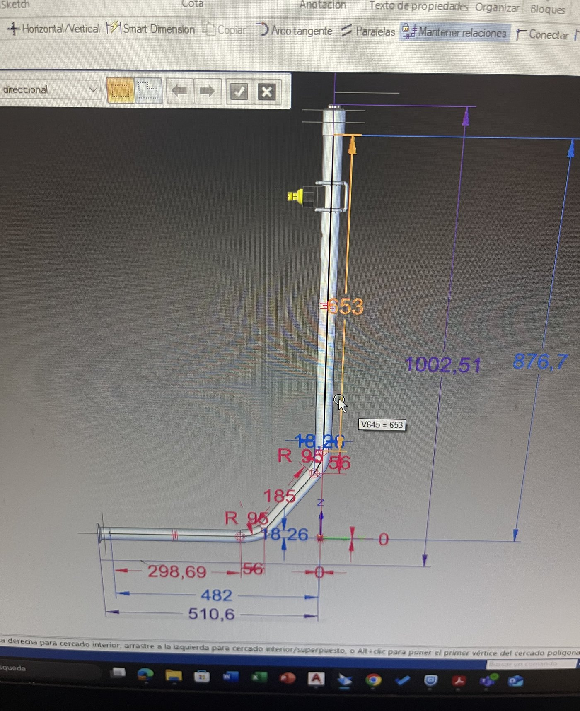
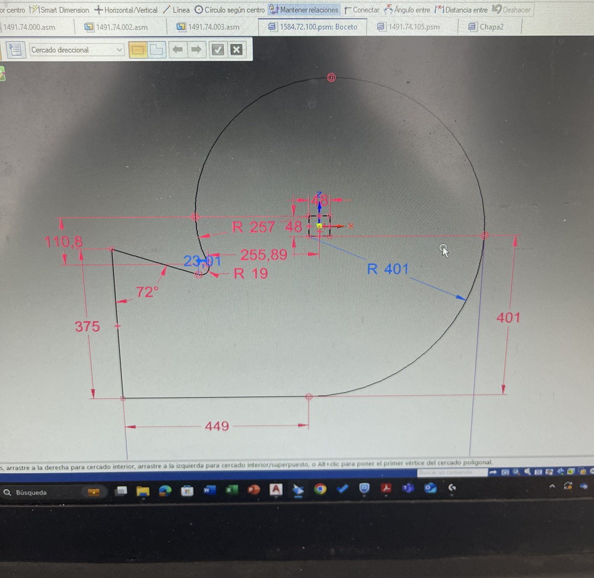
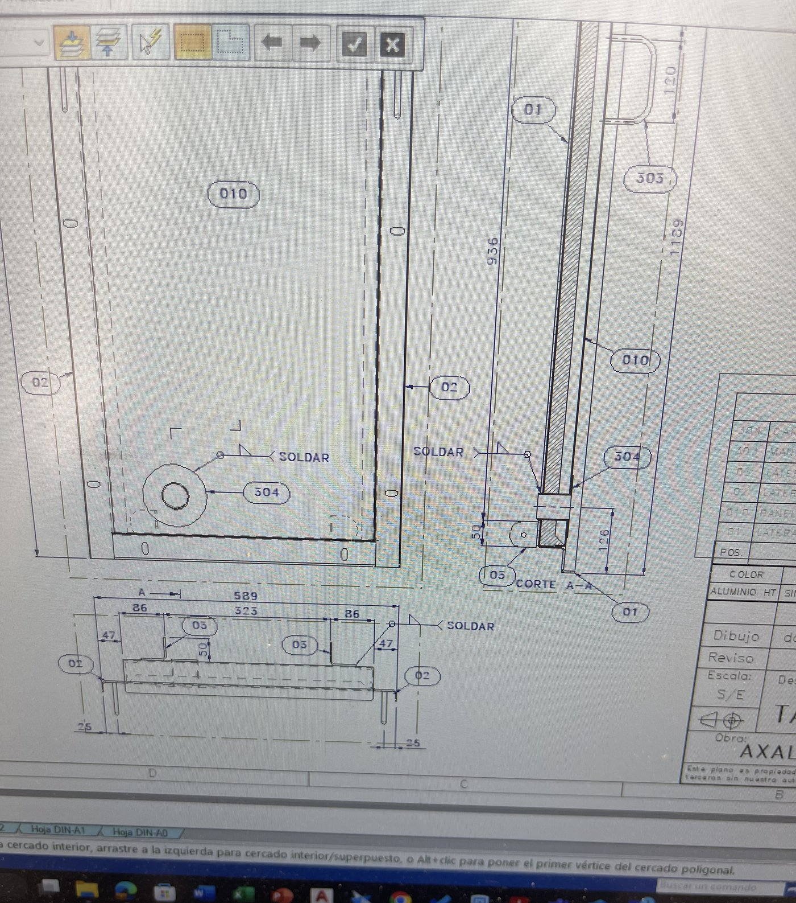
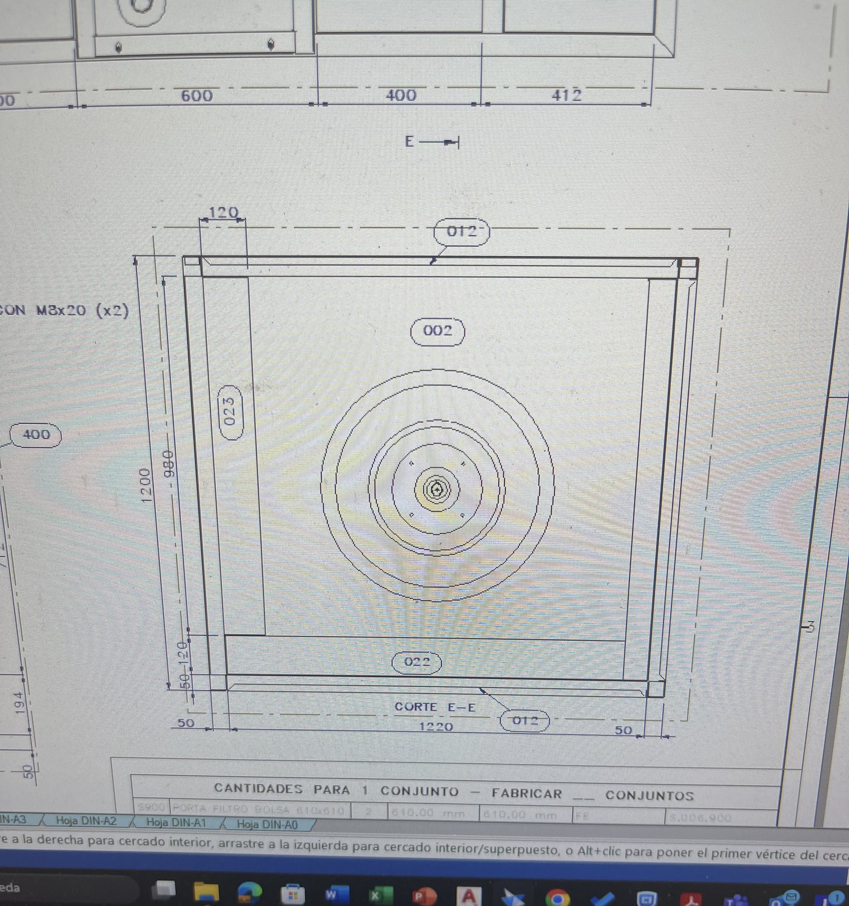

Three progressive roles at an industrial surface-treatment engineering firm — from technical-commercial
proposals, to documentation, to mechanical and piping design.
Independently produced 10 assembly layout drawings for a full pretreatment system, beyond standard section scope, each mapping 50–100 components with assembly call-outs (fastener selection, welding requirements, orientation).
Owned mechanical design and drawing generation in Solid Edge for project sections across 8–10 industrial surface-treatment installations, producing up to 50–60 manufacturing drawings on larger sections.
Generated ~40 detail drawings for an arc movement system and ~25–30 structural drawings for its supporting frame, including full assembly documentation, for one installation.
Structured material and component lists per client specifications alongside manufacturing-ready drawings.
Performed verification calculations and technical assessments to confirm design parameters ahead of project delivery.
Conducted 3–5 on-site technical assessments, accompanied by senior engineers, and built commissioning checklists to support technical-assistance handover at project close-out.
Collaborated daily with sales, procurement, manufacturing, and technical-assistance teams to track progress and resolve open technical issues across projects.
Contributed to continuous improvement of internal engineering workflows and quality management system (SGI) compliance.

3D assembly model, ducting housing

Piping detail, dimensioned

Parametric sketch, profile

Assembly drawing, weld call-outs

Sectional detail view
May 2023 – Jan 2025
Documentation Engineer
Gottert S.A., Buenos Aires, Argentina
~20
Technical manuals
~1/mo
Manuals, sustained pace
2 yrs
Role duration
Authored close to 20 comprehensive technical manuals (~1 per month) over two years, covering paint booths, air handling units, pretreatment systems, drying ovens, and transportation systems.
Jointly defined documentation content standards with engineering leadership, improving consistency across manual types.
Produced assembly layout schematics showing equipment placement and piping connections for on-site installation teams.
Compiled component lists (structural profiles, piping, fittings, mechanical components) used in supplier evaluation and technical advisory.
Developed component schematics and equipment lists supporting project handover and client troubleshooting.
Maintained documentation per SGI filing and version-control procedures, ensuring accurate and accessible records across all active projects.
May 2020 – Sep 2021
Technical Commercial Proposals
Gottert S.A., Buenos Aires, Argentina
3–5
Proposals / day
15
Simultaneous proposals
~6 mo
To sending direct to clients
1
Gov't tender submission
Prepared 3–5 technical-commercial proposals per day for industrial surface-treatment installations; within ~6 months, began sending simpler proposals directly to clients.
Managed up to 15 standard proposals simultaneously, ensuring clarity and completeness per client requirements.
Built a standardized proposal template library for the company's standard equipment lines, cutting turnaround for repeat configurations from hours to minutes and freeing capacity for custom proposals.
Contributed to a government tender submission, supporting technical, format, and compliance requirements.
Prepared pricing estimates using Excel-based cost models, incorporating materials and labor hours, with input from engineering and management.
Built annual commercial reporting tools in Excel, capturing revenue by client, industry, and service line, and developed PowerPoint summaries presented to commercial management.